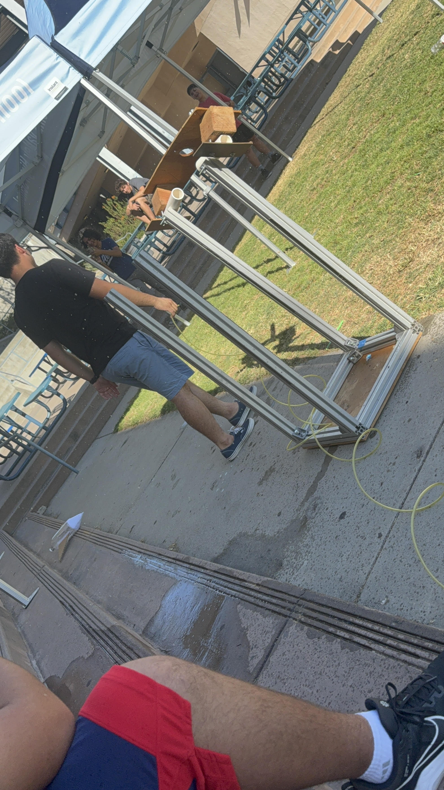

8/20/23 - This is my first journal entry!
8/25/23 - This week was eventful. I did a ton of homework alongside studying for AP Environmental Science. This week, I learned about the Engineering process alongside Binary, Hex Code, and Base 10 translations. Safety was also something I learned and how it is essential to this class. The challenge on Thursday involved PVC pipes and working as a team to move a marble from one place to another. My team managed to score while the other team failed every attempt. This weekend I am going to be studying for my classes alongside completing labs for AP Comp Sci.
9/1/23 - During the last week of August of 2023, I learned about the engineering processes alongside safety processes. To be more specific, we learned about mechanical engineering and how it entails mathematical
and physics principles with the addition of simple machines. We also started designing Rube Goldberg Machine on Wednesday in our groups with Justin, Ian, and I being part of a team. Our class also held a household
appliances contest in which Mr. Poole gave the two winners two Kit Kats.

9/8/23 - This week, everything was just mediocre. Every class went by relatively fast but still felt slow at the same time. I learned about mathematical processes in AP Comp Sci and how to construct and declare those with integers and doubles.
Our Rube Goldberg will first send down a ball into a pullee system and that pullee system will bring a car up to a platform to be sent down into a lever with a needle on it to poke the balloon into oblivion. All our machines in the machine
are screw, incline plane, pullee, wheel and axle, and a lever.
I think the most challenging part of the machine will be the structural integrety of the cardboard structures as the baseball is relatively heay.

9/18/23 - This week, my team, Ian and Justin, and I, created a Rube Goldberg machine. It consisted of a screw, incline plane, and a lever. However, the design was last minute as we intended for the machine to have a car for wheel and axle and a pullee
system inbetween the incline plane and the lever. However, in the end, it had worked out with our team being the first to finish the competition. Unfortunately, I highly doubt we will be the winners lol.

9/22/23 - During this week, our classroom's internet was down which meant we worked on challenges all week. However, we had fun challenges. The first one being a paper floatation device. We had one paper sheet and had to carry as much weight as possible
while being on water for 5 minutes. Our second challenge was drawing a E with whatever dimensions we want under 3 feet. I made a small 6in height by 3 1/2in length E. I acquired someone elses 8in by 10in..? E.
9/28/23 - This week we learned about computer parts and what each of them do. The hardware side of computer engineering is the most interesting to me such as CPU, GPU, RAM, SSD, etc. This week, we dissected computers to learn about what parts go where
and to see how to put it back together. I learned about how to wire the PSU into the computer and the computer works by each part communicating to each other through the motherboard to perform an action. This weekend, I'm most likely going to be studying
for AP Comp Sci and Math.


10/06/23 - This week we learned about bioengineeing. One thing I learned about bioengineering is that bioengineering encompasses the entire engineering spectrum. My hand design was based on a real human hand with rubber bands acting as tendons and string under the fingers cutting
through the palm to act as muscles. Personally, if I could revise it, I would remove the rubber bands and add individual holes for the string. This weekend however, I'm just going to stay home and I'm too lazy this week for homecoming :).
10/13/23 - This week we learned about aerospace engineering and how it comprises of space exploration and aeronautical engineering. The four forces on a flying object are thrust, drag, lift, and weight. Thrust allows the flying object to have force to be able to fly through. Drag
is the force that drags the flying object against air molecules. Lift allows the flying object to stay airborne. Weight pulls the flying object down.

BOM
10/20/23 - This week, I learned that aerospace engineering encompasses two engineering branches. Within those two engineering processes, there is four forces that act upon an aeronautical object. These four forces are lift, drag, thrust, and weight. Our rocket was built around the
of the F-16 fighter jet with the wings leaning towards the back and fins at the complete back. We also had a tail but it did not expect how we expected it to. We tested it during class simulating thrust with our hands but when we put the actual listed PSI from our BOM, the plane
tilted towards the right but still went relatively far.

10/26/23 - This week, I learned about the Environmental engineering process. Environmental engineers aim to better the land, air, and water for human usage. For an example, they build water treatment plants which recycle water that have been used. The process is firstly filtering black water with large debris.
Nextly, the water is filtered again and then small debris would be dropped towards the bottom. The grey water is then chlorinated and then is repumped back to usage state. Yesterday, I was not able to make it to class due to my driver's license test. I passed and was able to secure tha bag.
One thing I am excited for this weekend is being to able to rest instead of studying and doing homework all day :).
Nov 3/9 - Last week, I learned about electrical components and how to calculate voltage, amperage, and resistance. Electrical components include resistors, diodes, circuits, and a power source. This week, we delved further into the electrical engineering by using breadboards and arduinos to build circuits
with light producing diodes. With ardunios we programmed and created light circuits that created light waves and etc. One thing that was interesting was how the arduino could take code and produce the coded effect.